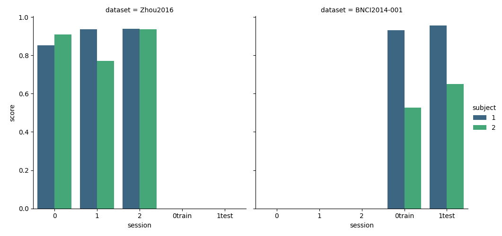

<!DOCTYPE html>

<html>
  <head>
    <meta charset="utf-8" />
    <meta name="viewport" content="width=device-width, initial-scale=1.0" />
    <title>Cross-Session on Multiple Datasets &#8212; moabb 0.4.5 documentation</title>
    <link rel="stylesheet" href="../_static/pygments.css" type="text/css" />
    <link rel="stylesheet" href="../_static/bootstrap-sphinx.css" type="text/css" />
    <link rel="stylesheet" type="text/css" href="../_static/gallery.css" />
    <link rel="stylesheet" type="text/css" href="../_static/gallery-binder.css" />
    <link rel="stylesheet" type="text/css" href="../_static/gallery-dataframe.css" />
    <link rel="stylesheet" type="text/css" href="../_static/gallery-rendered-html.css" />
    <script id="documentation_options" data-url_root="../" src="../_static/documentation_options.js"></script>
    <script src="../_static/jquery.js"></script>
    <script src="../_static/underscore.js"></script>
    <script src="../_static/doctools.js"></script>
    <link rel="index" title="Index" href="../genindex.html" />
    <link rel="search" title="Search" href="../search.html" />
<meta charset='utf-8'>
<meta http-equiv='X-UA-Compatible' content='IE=edge,chrome=1'>
<meta name='viewport' content='width=device-width, initial-scale=1.0, maximum-scale=1'>
<meta name="apple-mobile-web-app-capable" content="yes">
<script type="text/javascript" src="../_static/js/jquery-1.12.4.min.js"></script>
<script type="text/javascript" src="../_static/js/jquery-fix.js"></script>
<script type="text/javascript" src="../_static/bootstrap-3.4.1/js/bootstrap.min.js"></script>
<script type="text/javascript" src="../_static/bootstrap-sphinx.js"></script>

  </head><body>

  <div id="navbar" class="navbar navbar-inverse navbar-default navbar-fixed-top">
    <div class="container">
      <div class="navbar-header">
        <!-- .btn-navbar is used as the toggle for collapsed navbar content -->
        <button type="button" class="navbar-toggle" data-toggle="collapse" data-target=".nav-collapse">
          <span class="icon-bar"></span>
          <span class="icon-bar"></span>
          <span class="icon-bar"></span>
        </button>
        <a class="navbar-brand" href="../index.html">
          moabb</a>
        <span class="navbar-text navbar-version pull-left"><b>0.4.5</b></span>
      </div>

        <div class="collapse navbar-collapse nav-collapse">
          <ul class="nav navbar-nav">
            
                <li><a href="../whats_new.html">What's new</a></li>
                <li><a href="../api.html">API</a></li>
                <li><a href="index.html">Gallery</a></li>
                <li><a href="../auto_tutorials/index.html">Tutorials</a></li>
            
            
              <li class="dropdown globaltoc-container">
  <a role="button"
     id="dLabelGlobalToc"
     data-toggle="dropdown"
     data-target="#"
     href="../index.html">Site <b class="caret"></b></a>
  <ul class="dropdown-menu globaltoc"
      role="menu"
      aria-labelledby="dLabelGlobalToc"><ul>
<li class="toctree-l1"><a class="reference internal" href="../whats_new.html">What’s new</a><ul>
<li class="toctree-l2"><a class="reference internal" href="../whats_new.html#develop-branch">Develop branch</a></li>
<li class="toctree-l2"><a class="reference internal" href="../whats_new.html#version-0-4-5-stable-pypi">Version - 0.4.5  (Stable - PyPi)</a></li>
<li class="toctree-l2"><a class="reference internal" href="../whats_new.html#version-0-4-4">Version - 0.4.4</a></li>
<li class="toctree-l2"><a class="reference internal" href="../whats_new.html#version-0-4-3">Version - 0.4.3</a></li>
<li class="toctree-l2"><a class="reference internal" href="../whats_new.html#version-0-4-2">Version - 0.4.2</a></li>
<li class="toctree-l2"><a class="reference internal" href="../whats_new.html#version-0-4-1">Version - 0.4.1</a></li>
<li class="toctree-l2"><a class="reference internal" href="../whats_new.html#version-0-4-0">Version - 0.4.0</a></li>
<li class="toctree-l2"><a class="reference internal" href="../whats_new.html#version-0-3-0">Version 0.3.0</a></li>
<li class="toctree-l2"><a class="reference internal" href="../whats_new.html#version-0-2-1">Version 0.2.1</a></li>
<li class="toctree-l2"><a class="reference internal" href="../whats_new.html#version-0-2-0">Version 0.2.0</a></li>
</ul>
</li>
</ul>
<p class="caption"><span class="caption-text">Main classes of MOABB:</span></p>
<ul>
<li class="toctree-l1"><a class="reference internal" href="../datasets.html">Datasets</a><ul>
<li class="toctree-l2"><a class="reference internal" href="../datasets.html#motor-imagery-datasets">Motor Imagery Datasets</a></li>
<li class="toctree-l2"><a class="reference internal" href="../datasets.html#erp-datasets">ERP Datasets</a></li>
<li class="toctree-l2"><a class="reference internal" href="../datasets.html#ssvep-datasets">SSVEP Datasets</a></li>
<li class="toctree-l2"><a class="reference internal" href="../datasets.html#base-utils">Base &amp; Utils</a></li>
</ul>
</li>
<li class="toctree-l1"><a class="reference internal" href="../evaluations.html">Evaluations</a><ul>
<li class="toctree-l2"><a class="reference internal" href="../evaluations.html#id1">Evaluations</a></li>
<li class="toctree-l2"><a class="reference internal" href="../evaluations.html#base-utils">Base &amp; Utils</a></li>
</ul>
</li>
<li class="toctree-l1"><a class="reference internal" href="../paradigms.html">Paradigms</a><ul>
<li class="toctree-l2"><a class="reference internal" href="../paradigms.html#motor-imagery-paradigms">Motor Imagery Paradigms</a></li>
<li class="toctree-l2"><a class="reference internal" href="../paradigms.html#p300-paradigms">P300 Paradigms</a></li>
<li class="toctree-l2"><a class="reference internal" href="../paradigms.html#ssvep-paradigms">SSVEP Paradigms</a></li>
<li class="toctree-l2"><a class="reference internal" href="../paradigms.html#base-utils">Base &amp; Utils</a></li>
</ul>
</li>
<li class="toctree-l1"><a class="reference internal" href="../pipelines.html">Pipelines</a><ul>
<li class="toctree-l2"><a class="reference internal" href="../pipelines.html#id1">Pipelines</a></li>
<li class="toctree-l2"><a class="reference internal" href="../pipelines.html#base-utils">Base &amp; Utils</a></li>
</ul>
</li>
<li class="toctree-l1"><a class="reference internal" href="../analysis.html">Analysis</a><ul>
<li class="toctree-l2"><a class="reference internal" href="../analysis.html#plotting">Plotting</a></li>
<li class="toctree-l2"><a class="reference internal" href="../analysis.html#statistics">Statistics</a></li>
</ul>
</li>
</ul>
</ul>
</li>
              
                <li class="dropdown">
  <a role="button"
     id="dLabelLocalToc"
     data-toggle="dropdown"
     data-target="#"
     href="#">Page <b class="caret"></b></a>
  <ul class="dropdown-menu localtoc"
      role="menu"
      aria-labelledby="dLabelLocalToc"><ul>
<li><a class="reference internal" href="#">Cross-Session on Multiple Datasets</a><ul>
<li><a class="reference internal" href="#loading-dataset">Loading Dataset</a></li>
<li><a class="reference internal" href="#choose-paradigm">Choose Paradigm</a></li>
<li><a class="reference internal" href="#create-pipelines">Create Pipelines</a></li>
<li><a class="reference internal" href="#get-data-optional">Get Data (optional)</a></li>
<li><a class="reference internal" href="#evaluation">Evaluation</a></li>
<li><a class="reference internal" href="#plot-results">Plot Results</a></li>
</ul>
</li>
</ul>
</ul>
</li>
              
            
            
            
            
            
          </ul>

          
            
<form class="navbar-form navbar-right" action="../search.html" method="get">
 <div class="form-group">
  <input type="text" name="q" class="form-control" placeholder="Search" />
 </div>
  <input type="hidden" name="check_keywords" value="yes" />
  <input type="hidden" name="area" value="default" />
</form>
          
        </div>
    </div>
  </div>

<div class="container">
  <div class="row">
    <div class="body col-md-12 content" role="main">
      
  <div class="sphx-glr-download-link-note admonition note">
<p class="admonition-title">Note</p>
<p>Click <a class="reference internal" href="#sphx-glr-download-auto-examples-plot-cross-session-multiple-datasets-py"><span class="std std-ref">here</span></a>
to download the full example code</p>
</div>
<div class="sphx-glr-example-title section" id="cross-session-on-multiple-datasets">
<span id="sphx-glr-auto-examples-plot-cross-session-multiple-datasets-py"></span><h1>Cross-Session on Multiple Datasets<a class="headerlink" href="#cross-session-on-multiple-datasets" title="Permalink to this headline">¶</a></h1>
<p>This example shows how to perform a cross-session analysis on two MI datasets
using a CSP+LDA pipeline</p>
<p>The cross session evaluation context will evaluate performance using a leave
one session out cross-validation. For each session in the dataset, a model
is trained on every other session and performance are evaluated on the current
session.</p>
<div class="highlight-default notranslate"><div class="highlight"><pre><span></span><span class="c1"># Authors: Sylvain Chevallier &lt;sylvain.chevallier@uvsq.fr&gt;</span>
<span class="c1">#</span>
<span class="c1"># License: BSD (3-clause)</span>

<span class="kn">import</span> <span class="nn">warnings</span>

<span class="kn">import</span> <span class="nn">matplotlib.pyplot</span> <span class="k">as</span> <span class="nn">plt</span>
<span class="kn">import</span> <span class="nn">seaborn</span> <span class="k">as</span> <span class="nn">sns</span>
<span class="kn">from</span> <span class="nn">mne.decoding</span> <span class="kn">import</span> <a href="https://mne.tools/stable/generated/mne.decoding.CSP.html#mne.decoding.CSP" title="mne.decoding.CSP" class="sphx-glr-backref-module-mne-decoding sphx-glr-backref-type-py-class"><span class="n">CSP</span></a>
<span class="kn">from</span> <span class="nn">sklearn.discriminant_analysis</span> <span class="kn">import</span> <span class="n">LinearDiscriminantAnalysis</span> <span class="k">as</span> <a href="https://scikit-learn.org/stable/modules/generated/sklearn.discriminant_analysis.LinearDiscriminantAnalysis.html#sklearn.discriminant_analysis.LinearDiscriminantAnalysis" title="sklearn.discriminant_analysis.LinearDiscriminantAnalysis" class="sphx-glr-backref-module-sklearn-discriminant_analysis sphx-glr-backref-type-py-class"><span class="n">LDA</span></a>
<span class="kn">from</span> <span class="nn">sklearn.pipeline</span> <span class="kn">import</span> <a href="https://scikit-learn.org/stable/modules/generated/sklearn.pipeline.make_pipeline.html#sklearn.pipeline.make_pipeline" title="sklearn.pipeline.make_pipeline" class="sphx-glr-backref-module-sklearn-pipeline sphx-glr-backref-type-py-function"><span class="n">make_pipeline</span></a>

<span class="kn">import</span> <span class="nn">moabb</span>
<span class="kn">from</span> <span class="nn">moabb.datasets</span> <span class="kn">import</span> <span class="n">BNCI2014001</span><span class="p">,</span> <span class="n">Zhou2016</span>
<span class="kn">from</span> <span class="nn">moabb.evaluations</span> <span class="kn">import</span> <a href="https://docs.python.org/3/library/abc.html#abc.ABC" title="abc.ABC" class="sphx-glr-backref-module-abc sphx-glr-backref-type-py-class"><span class="n">CrossSessionEvaluation</span></a>
<span class="kn">from</span> <span class="nn">moabb.paradigms</span> <span class="kn">import</span> <span class="n">LeftRightImagery</span>


<a href="https://docs.python.org/3/library/warnings.html#warnings.simplefilter" title="warnings.simplefilter" class="sphx-glr-backref-module-warnings sphx-glr-backref-type-py-function"><span class="n">warnings</span><span class="o">.</span><span class="n">simplefilter</span></a><span class="p">(</span><span class="n">action</span><span class="o">=</span><span class="s2">&quot;ignore&quot;</span><span class="p">,</span> <span class="n">category</span><span class="o">=</span><span class="ne">FutureWarning</span><span class="p">)</span>
<a href="https://docs.python.org/3/library/warnings.html#warnings.simplefilter" title="warnings.simplefilter" class="sphx-glr-backref-module-warnings sphx-glr-backref-type-py-function"><span class="n">warnings</span><span class="o">.</span><span class="n">simplefilter</span></a><span class="p">(</span><span class="n">action</span><span class="o">=</span><span class="s2">&quot;ignore&quot;</span><span class="p">,</span> <span class="n">category</span><span class="o">=</span><span class="ne">RuntimeWarning</span><span class="p">)</span>
<span class="n">moabb</span><span class="o">.</span><span class="n">set_log_level</span><span class="p">(</span><span class="s2">&quot;info&quot;</span><span class="p">)</span>
</pre></div>
</div>
<p class="sphx-glr-script-out">Out:</p>
<div class="sphx-glr-script-out highlight-none notranslate"><div class="highlight"><pre><span></span>/home/runner/work/moabb/moabb/.venv/lib/python3.9/site-packages/seaborn/cm.py:1582: UserWarning: Trying to register the cmap &#39;rocket&#39; which already exists.
  mpl_cm.register_cmap(_name, _cmap)
/home/runner/work/moabb/moabb/.venv/lib/python3.9/site-packages/seaborn/cm.py:1583: UserWarning: Trying to register the cmap &#39;rocket_r&#39; which already exists.
  mpl_cm.register_cmap(_name + &quot;_r&quot;, _cmap_r)
/home/runner/work/moabb/moabb/.venv/lib/python3.9/site-packages/seaborn/cm.py:1582: UserWarning: Trying to register the cmap &#39;mako&#39; which already exists.
  mpl_cm.register_cmap(_name, _cmap)
/home/runner/work/moabb/moabb/.venv/lib/python3.9/site-packages/seaborn/cm.py:1583: UserWarning: Trying to register the cmap &#39;mako_r&#39; which already exists.
  mpl_cm.register_cmap(_name + &quot;_r&quot;, _cmap_r)
/home/runner/work/moabb/moabb/.venv/lib/python3.9/site-packages/seaborn/cm.py:1582: UserWarning: Trying to register the cmap &#39;icefire&#39; which already exists.
  mpl_cm.register_cmap(_name, _cmap)
/home/runner/work/moabb/moabb/.venv/lib/python3.9/site-packages/seaborn/cm.py:1583: UserWarning: Trying to register the cmap &#39;icefire_r&#39; which already exists.
  mpl_cm.register_cmap(_name + &quot;_r&quot;, _cmap_r)
/home/runner/work/moabb/moabb/.venv/lib/python3.9/site-packages/seaborn/cm.py:1582: UserWarning: Trying to register the cmap &#39;vlag&#39; which already exists.
  mpl_cm.register_cmap(_name, _cmap)
/home/runner/work/moabb/moabb/.venv/lib/python3.9/site-packages/seaborn/cm.py:1583: UserWarning: Trying to register the cmap &#39;vlag_r&#39; which already exists.
  mpl_cm.register_cmap(_name + &quot;_r&quot;, _cmap_r)
/home/runner/work/moabb/moabb/.venv/lib/python3.9/site-packages/seaborn/cm.py:1582: UserWarning: Trying to register the cmap &#39;flare&#39; which already exists.
  mpl_cm.register_cmap(_name, _cmap)
/home/runner/work/moabb/moabb/.venv/lib/python3.9/site-packages/seaborn/cm.py:1583: UserWarning: Trying to register the cmap &#39;flare_r&#39; which already exists.
  mpl_cm.register_cmap(_name + &quot;_r&quot;, _cmap_r)
/home/runner/work/moabb/moabb/.venv/lib/python3.9/site-packages/seaborn/cm.py:1582: UserWarning: Trying to register the cmap &#39;crest&#39; which already exists.
  mpl_cm.register_cmap(_name, _cmap)
/home/runner/work/moabb/moabb/.venv/lib/python3.9/site-packages/seaborn/cm.py:1583: UserWarning: Trying to register the cmap &#39;crest_r&#39; which already exists.
  mpl_cm.register_cmap(_name + &quot;_r&quot;, _cmap_r)
</pre></div>
</div>
<div class="section" id="loading-dataset">
<h2>Loading Dataset<a class="headerlink" href="#loading-dataset" title="Permalink to this headline">¶</a></h2>
<p>Load 2 subjects of BNCI 2014-004 and Zhou2016 datasets, with 2 session each</p>
<div class="highlight-default notranslate"><div class="highlight"><pre><span></span><a href="https://docs.python.org/3/library/stdtypes.html#list" title="builtins.list" class="sphx-glr-backref-module-builtins sphx-glr-backref-type-py-class sphx-glr-backref-instance"><span class="n">subj</span></a> <span class="o">=</span> <span class="p">[</span><span class="mi">1</span><span class="p">,</span> <span class="mi">2</span><span class="p">]</span>
<a href="https://docs.python.org/3/library/stdtypes.html#list" title="builtins.list" class="sphx-glr-backref-module-builtins sphx-glr-backref-type-py-class sphx-glr-backref-instance"><span class="n">datasets</span></a> <span class="o">=</span> <span class="p">[</span><span class="n">Zhou2016</span><span class="p">(),</span> <span class="n">BNCI2014001</span><span class="p">()]</span>
<span class="k">for</span> <span class="n">d</span> <span class="ow">in</span> <a href="https://docs.python.org/3/library/stdtypes.html#list" title="builtins.list" class="sphx-glr-backref-module-builtins sphx-glr-backref-type-py-class sphx-glr-backref-instance"><span class="n">datasets</span></a><span class="p">:</span>
    <a href="https://docs.python.org/3/library/stdtypes.html#list" title="builtins.list" class="sphx-glr-backref-module-builtins sphx-glr-backref-type-py-class sphx-glr-backref-instance"><span class="n">d</span><span class="o">.</span><span class="n">subject_list</span></a> <span class="o">=</span> <a href="https://docs.python.org/3/library/stdtypes.html#list" title="builtins.list" class="sphx-glr-backref-module-builtins sphx-glr-backref-type-py-class sphx-glr-backref-instance"><span class="n">subj</span></a>
</pre></div>
</div>
</div>
<div class="section" id="choose-paradigm">
<h2>Choose Paradigm<a class="headerlink" href="#choose-paradigm" title="Permalink to this headline">¶</a></h2>
<p>We select the paradigm MI, applying a bandpass filter (8-35 Hz) on
the data and we will keep only left- and right-hand motor imagery</p>
<div class="highlight-default notranslate"><div class="highlight"><pre><span></span><span class="n">paradigm</span> <span class="o">=</span> <span class="n">LeftRightImagery</span><span class="p">(</span><span class="n">fmin</span><span class="o">=</span><span class="mi">8</span><span class="p">,</span> <span class="n">fmax</span><span class="o">=</span><span class="mi">35</span><span class="p">)</span>
</pre></div>
</div>
</div>
<div class="section" id="create-pipelines">
<h2>Create Pipelines<a class="headerlink" href="#create-pipelines" title="Permalink to this headline">¶</a></h2>
<p>Use the Common Spatial Patterns with 8 components and a Linear Discriminant
Analysis classifier.</p>
<div class="highlight-default notranslate"><div class="highlight"><pre><span></span><a href="https://docs.python.org/3/library/stdtypes.html#dict" title="builtins.dict" class="sphx-glr-backref-module-builtins sphx-glr-backref-type-py-class sphx-glr-backref-instance"><span class="n">pipeline</span></a> <span class="o">=</span> <span class="p">{}</span>
<a href="https://docs.python.org/3/library/stdtypes.html#dict" title="builtins.dict" class="sphx-glr-backref-module-builtins sphx-glr-backref-type-py-class sphx-glr-backref-instance"><span class="n">pipeline</span></a><span class="p">[</span><span class="s2">&quot;CSP+LDA&quot;</span><span class="p">]</span> <span class="o">=</span> <a href="https://scikit-learn.org/stable/modules/generated/sklearn.pipeline.make_pipeline.html#sklearn.pipeline.make_pipeline" title="sklearn.pipeline.make_pipeline" class="sphx-glr-backref-module-sklearn-pipeline sphx-glr-backref-type-py-function"><span class="n">make_pipeline</span></a><span class="p">(</span><a href="https://mne.tools/stable/generated/mne.decoding.CSP.html#mne.decoding.CSP" title="mne.decoding.CSP" class="sphx-glr-backref-module-mne-decoding sphx-glr-backref-type-py-class"><span class="n">CSP</span></a><span class="p">(</span><span class="n">n_components</span><span class="o">=</span><span class="mi">8</span><span class="p">),</span> <a href="https://scikit-learn.org/stable/modules/generated/sklearn.discriminant_analysis.LinearDiscriminantAnalysis.html#sklearn.discriminant_analysis.LinearDiscriminantAnalysis" title="sklearn.discriminant_analysis.LinearDiscriminantAnalysis" class="sphx-glr-backref-module-sklearn-discriminant_analysis sphx-glr-backref-type-py-class"><span class="n">LDA</span></a><span class="p">())</span>
</pre></div>
</div>
</div>
<div class="section" id="get-data-optional">
<h2>Get Data (optional)<a class="headerlink" href="#get-data-optional" title="Permalink to this headline">¶</a></h2>
<p>To get access to the EEG signals downloaded from the dataset, you could
use <cite>dataset.get_data(subjects=[subject_id])</cite> to obtain the EEG under
an MNE format, stored in a dictionary of sessions and runs.
Otherwise, <cite>paradigm.get_data(dataset=dataset, subjects=[subject_id])</cite>
allows to obtain the EEG data in sklearn format, the labels and the meta
information. The data are preprocessed according to the paradigm
requirements.</p>
<div class="highlight-default notranslate"><div class="highlight"><pre><span></span><span class="c1"># X_all, labels_all, meta_all = [], [], []</span>
<span class="c1"># for d in datasets:</span>
<span class="c1">#     # sessions = d.get_data(subjects=[2])</span>
<span class="c1">#     X, labels, meta = paradigm.get_data(dataset=d, subjects=[2])</span>
<span class="c1">#     X_all.append(X)</span>
<span class="c1">#     labels_all.append(labels)</span>
<span class="c1">#     meta_all.append(meta)</span>
</pre></div>
</div>
</div>
<div class="section" id="evaluation">
<h2>Evaluation<a class="headerlink" href="#evaluation" title="Permalink to this headline">¶</a></h2>
<p>The evaluation will return a DataFrame containing a single AUC score for
each subject / session of the dataset, and for each pipeline.</p>
<div class="highlight-default notranslate"><div class="highlight"><pre><span></span><a href="https://docs.python.org/3/library/functions.html#bool" title="builtins.bool" class="sphx-glr-backref-module-builtins sphx-glr-backref-type-py-class sphx-glr-backref-instance"><span class="n">overwrite</span></a> <span class="o">=</span> <span class="kc">True</span>  <span class="c1"># set to True if we want to overwrite cached results</span>

<span class="n">evaluation</span> <span class="o">=</span> <a href="https://docs.python.org/3/library/abc.html#abc.ABC" title="abc.ABC" class="sphx-glr-backref-module-abc sphx-glr-backref-type-py-class"><span class="n">CrossSessionEvaluation</span></a><span class="p">(</span>
    <span class="n">paradigm</span><span class="o">=</span><span class="n">paradigm</span><span class="p">,</span> <a href="https://docs.python.org/3/library/stdtypes.html#list" title="builtins.list" class="sphx-glr-backref-module-builtins sphx-glr-backref-type-py-class sphx-glr-backref-instance"><span class="n">datasets</span></a><span class="o">=</span><a href="https://docs.python.org/3/library/stdtypes.html#list" title="builtins.list" class="sphx-glr-backref-module-builtins sphx-glr-backref-type-py-class sphx-glr-backref-instance"><span class="n">datasets</span></a><span class="p">,</span> <span class="n">suffix</span><span class="o">=</span><span class="s2">&quot;examples&quot;</span><span class="p">,</span> <a href="https://docs.python.org/3/library/functions.html#bool" title="builtins.bool" class="sphx-glr-backref-module-builtins sphx-glr-backref-type-py-class sphx-glr-backref-instance"><span class="n">overwrite</span></a><span class="o">=</span><a href="https://docs.python.org/3/library/functions.html#bool" title="builtins.bool" class="sphx-glr-backref-module-builtins sphx-glr-backref-type-py-class sphx-glr-backref-instance"><span class="n">overwrite</span></a>
<span class="p">)</span>
<span class="n">results</span> <span class="o">=</span> <span class="n">evaluation</span><span class="o">.</span><span class="n">process</span><span class="p">(</span><a href="https://docs.python.org/3/library/stdtypes.html#dict" title="builtins.dict" class="sphx-glr-backref-module-builtins sphx-glr-backref-type-py-class sphx-glr-backref-instance"><span class="n">pipeline</span></a><span class="p">)</span>

<span class="nb">print</span><span class="p">(</span><span class="n">results</span><span class="o">.</span><span class="n">head</span><span class="p">())</span>
<span class="n">results</span><span class="o">.</span><span class="n">replace</span><span class="p">([</span><span class="s2">&quot;session_E&quot;</span><span class="p">,</span> <span class="s2">&quot;session_T&quot;</span><span class="p">],</span> <span class="p">[</span><span class="s2">&quot;session_0&quot;</span><span class="p">,</span> <span class="s2">&quot;session_1&quot;</span><span class="p">],</span> <span class="n">inplace</span><span class="o">=</span><span class="kc">True</span><span class="p">)</span>
</pre></div>
</div>
<p class="sphx-glr-script-out">Out:</p>
<div class="sphx-glr-script-out highlight-none notranslate"><div class="highlight"><pre><span></span>Zhou 2016-CrossSession:   0%|          | 0/2 [00:00&lt;?, ?it/s]

  0%|                                               | 0.00/156M [00:00&lt;?, ?B/s]

  0%|                                       | 52.2k/156M [00:00&lt;06:29, 401kB/s]

  0%|                                        | 209k/156M [00:00&lt;03:01, 860kB/s]

  1%|▏                                      | 923k/156M [00:00&lt;00:53, 2.92MB/s]

  2%|▊                                     | 3.36M/156M [00:00&lt;00:15, 10.0MB/s]

  4%|█▍                                    | 5.91M/156M [00:00&lt;00:10, 14.9MB/s]

  6%|██▎                                   | 9.46M/156M [00:00&lt;00:06, 21.4MB/s]

  8%|██▉                                   | 12.0M/156M [00:00&lt;00:06, 22.5MB/s]

 10%|███▊                                  | 15.7M/156M [00:00&lt;00:05, 27.0MB/s]

 12%|████▍                                 | 18.5M/156M [00:01&lt;00:05, 27.0MB/s]

 14%|█████▍                                | 22.1M/156M [00:01&lt;00:04, 29.8MB/s]

 17%|██████▎                               | 25.9M/156M [00:01&lt;00:04, 32.1MB/s]

 19%|███████▎                              | 29.9M/156M [00:01&lt;00:03, 33.3MB/s]

 22%|████████▎                             | 34.2M/156M [00:01&lt;00:03, 36.1MB/s]

 24%|█████████▏                            | 37.8M/156M [00:01&lt;00:03, 36.0MB/s]

 27%|██████████▏                           | 41.9M/156M [00:01&lt;00:03, 37.4MB/s]

 29%|███████████▏                          | 46.0M/156M [00:01&lt;00:02, 38.4MB/s]

 32%|████████████▏                         | 50.3M/156M [00:01&lt;00:02, 39.5MB/s]

 35%|█████████████▎                        | 54.5M/156M [00:01&lt;00:02, 40.0MB/s]

 38%|██████████████▎                       | 58.8M/156M [00:02&lt;00:02, 41.1MB/s]

 40%|███████████████▍                      | 63.2M/156M [00:02&lt;00:02, 41.9MB/s]

 43%|████████████████▍                     | 67.5M/156M [00:02&lt;00:02, 42.2MB/s]

 46%|█████████████████▌                    | 71.9M/156M [00:02&lt;00:01, 42.8MB/s]

 49%|██████████████████▌                   | 76.3M/156M [00:02&lt;00:01, 43.0MB/s]

 52%|███████████████████▋                  | 80.8M/156M [00:02&lt;00:01, 43.4MB/s]

 55%|████████████████████▋                 | 85.1M/156M [00:02&lt;00:01, 43.5MB/s]

 57%|█████████████████████▊                | 89.6M/156M [00:02&lt;00:01, 43.9MB/s]

 60%|██████████████████████▉               | 94.0M/156M [00:02&lt;00:01, 43.1MB/s]

 63%|███████████████████████▉              | 98.6M/156M [00:02&lt;00:01, 43.8MB/s]

 66%|█████████████████████████▋             | 103M/156M [00:03&lt;00:01, 43.2MB/s]

 69%|██████████████████████████▊            | 107M/156M [00:03&lt;00:01, 43.6MB/s]

 72%|███████████████████████████▉           | 112M/156M [00:03&lt;00:01, 43.6MB/s]

 74%|█████████████████████████████          | 116M/156M [00:03&lt;00:00, 43.8MB/s]

 77%|██████████████████████████████▏        | 121M/156M [00:03&lt;00:00, 44.2MB/s]

 80%|███████████████████████████████▏       | 125M/156M [00:03&lt;00:00, 43.7MB/s]

 83%|████████████████████████████████▎      | 130M/156M [00:03&lt;00:00, 43.8MB/s]

 86%|█████████████████████████████████▍     | 134M/156M [00:03&lt;00:00, 44.0MB/s]

 89%|██████████████████████████████████▌    | 138M/156M [00:03&lt;00:00, 43.8MB/s]

 92%|███████████████████████████████████▋   | 143M/156M [00:03&lt;00:00, 44.3MB/s]

 94%|████████████████████████████████████▊  | 147M/156M [00:04&lt;00:00, 43.9MB/s]

 97%|█████████████████████████████████████▉ | 152M/156M [00:04&lt;00:00, 44.4MB/s]

  0%|                                               | 0.00/156M [00:00&lt;?, ?B/s]
100%|████████████████████████████████████████| 156M/156M [00:00&lt;00:00, 249GB/s]
/home/runner/work/moabb/moabb/.venv/lib/python3.9/site-packages/mne/utils/check.py:92: DeprecationWarning: distutils Version classes are deprecated. Use packaging.version instead.
  LooseVersion(library.__version__) &lt; LooseVersion(min_version):
/home/runner/work/moabb/moabb/.venv/lib/python3.9/site-packages/mne/utils/check.py:92: DeprecationWarning: distutils Version classes are deprecated. Use packaging.version instead.
  LooseVersion(library.__version__) &lt; LooseVersion(min_version):
/home/runner/work/moabb/moabb/.venv/lib/python3.9/site-packages/mne/utils/check.py:92: DeprecationWarning: distutils Version classes are deprecated. Use packaging.version instead.
  LooseVersion(library.__version__) &lt; LooseVersion(min_version):
/home/runner/work/moabb/moabb/.venv/lib/python3.9/site-packages/mne/utils/check.py:92: DeprecationWarning: distutils Version classes are deprecated. Use packaging.version instead.
  LooseVersion(library.__version__) &lt; LooseVersion(min_version):
/home/runner/work/moabb/moabb/.venv/lib/python3.9/site-packages/mne/utils/check.py:92: DeprecationWarning: distutils Version classes are deprecated. Use packaging.version instead.
  LooseVersion(library.__version__) &lt; LooseVersion(min_version):
/home/runner/work/moabb/moabb/.venv/lib/python3.9/site-packages/mne/utils/check.py:92: DeprecationWarning: distutils Version classes are deprecated. Use packaging.version instead.
  LooseVersion(library.__version__) &lt; LooseVersion(min_version):
/home/runner/work/moabb/moabb/.venv/lib/python3.9/site-packages/mne/utils/check.py:92: DeprecationWarning: distutils Version classes are deprecated. Use packaging.version instead.
  LooseVersion(library.__version__) &lt; LooseVersion(min_version):
/home/runner/work/moabb/moabb/.venv/lib/python3.9/site-packages/mne/utils/check.py:92: DeprecationWarning: distutils Version classes are deprecated. Use packaging.version instead.
  LooseVersion(library.__version__) &lt; LooseVersion(min_version):
/home/runner/work/moabb/moabb/.venv/lib/python3.9/site-packages/mne/utils/check.py:92: DeprecationWarning: distutils Version classes are deprecated. Use packaging.version instead.
  LooseVersion(library.__version__) &lt; LooseVersion(min_version):
/home/runner/work/moabb/moabb/.venv/lib/python3.9/site-packages/mne/utils/check.py:92: DeprecationWarning: distutils Version classes are deprecated. Use packaging.version instead.
  LooseVersion(library.__version__) &lt; LooseVersion(min_version):
/home/runner/work/moabb/moabb/.venv/lib/python3.9/site-packages/mne/utils/check.py:92: DeprecationWarning: distutils Version classes are deprecated. Use packaging.version instead.
  LooseVersion(library.__version__) &lt; LooseVersion(min_version):
/home/runner/work/moabb/moabb/.venv/lib/python3.9/site-packages/mne/utils/check.py:92: DeprecationWarning: distutils Version classes are deprecated. Use packaging.version instead.
  LooseVersion(library.__version__) &lt; LooseVersion(min_version):

Zhou 2016-CrossSession:  50%|#####     | 1/2 [00:12&lt;00:12, 12.57s/it]/home/runner/work/moabb/moabb/.venv/lib/python3.9/site-packages/mne/utils/check.py:92: DeprecationWarning: distutils Version classes are deprecated. Use packaging.version instead.
  LooseVersion(library.__version__) &lt; LooseVersion(min_version):
/home/runner/work/moabb/moabb/.venv/lib/python3.9/site-packages/mne/utils/check.py:92: DeprecationWarning: distutils Version classes are deprecated. Use packaging.version instead.
  LooseVersion(library.__version__) &lt; LooseVersion(min_version):
/home/runner/work/moabb/moabb/.venv/lib/python3.9/site-packages/mne/utils/check.py:92: DeprecationWarning: distutils Version classes are deprecated. Use packaging.version instead.
  LooseVersion(library.__version__) &lt; LooseVersion(min_version):
/home/runner/work/moabb/moabb/.venv/lib/python3.9/site-packages/mne/utils/check.py:92: DeprecationWarning: distutils Version classes are deprecated. Use packaging.version instead.
  LooseVersion(library.__version__) &lt; LooseVersion(min_version):
/home/runner/work/moabb/moabb/.venv/lib/python3.9/site-packages/mne/utils/check.py:92: DeprecationWarning: distutils Version classes are deprecated. Use packaging.version instead.
  LooseVersion(library.__version__) &lt; LooseVersion(min_version):
/home/runner/work/moabb/moabb/.venv/lib/python3.9/site-packages/mne/utils/check.py:92: DeprecationWarning: distutils Version classes are deprecated. Use packaging.version instead.
  LooseVersion(library.__version__) &lt; LooseVersion(min_version):
/home/runner/work/moabb/moabb/.venv/lib/python3.9/site-packages/mne/utils/check.py:92: DeprecationWarning: distutils Version classes are deprecated. Use packaging.version instead.
  LooseVersion(library.__version__) &lt; LooseVersion(min_version):
/home/runner/work/moabb/moabb/.venv/lib/python3.9/site-packages/mne/utils/check.py:92: DeprecationWarning: distutils Version classes are deprecated. Use packaging.version instead.
  LooseVersion(library.__version__) &lt; LooseVersion(min_version):
/home/runner/work/moabb/moabb/.venv/lib/python3.9/site-packages/mne/utils/check.py:92: DeprecationWarning: distutils Version classes are deprecated. Use packaging.version instead.
  LooseVersion(library.__version__) &lt; LooseVersion(min_version):
/home/runner/work/moabb/moabb/.venv/lib/python3.9/site-packages/mne/utils/check.py:92: DeprecationWarning: distutils Version classes are deprecated. Use packaging.version instead.
  LooseVersion(library.__version__) &lt; LooseVersion(min_version):
/home/runner/work/moabb/moabb/.venv/lib/python3.9/site-packages/mne/utils/check.py:92: DeprecationWarning: distutils Version classes are deprecated. Use packaging.version instead.
  LooseVersion(library.__version__) &lt; LooseVersion(min_version):
/home/runner/work/moabb/moabb/.venv/lib/python3.9/site-packages/mne/utils/check.py:92: DeprecationWarning: distutils Version classes are deprecated. Use packaging.version instead.
  LooseVersion(library.__version__) &lt; LooseVersion(min_version):

Zhou 2016-CrossSession: 100%|##########| 2/2 [00:16&lt;00:00,  7.25s/it]
Zhou 2016-CrossSession: 100%|##########| 2/2 [00:16&lt;00:00,  8.05s/it]

001-2014-CrossSession:   0%|          | 0/2 [00:00&lt;?, ?it/s]/home/runner/work/moabb/moabb/.venv/lib/python3.9/site-packages/mne/utils/check.py:92: DeprecationWarning: distutils Version classes are deprecated. Use packaging.version instead.
  LooseVersion(library.__version__) &lt; LooseVersion(min_version):
/home/runner/work/moabb/moabb/.venv/lib/python3.9/site-packages/mne/utils/check.py:92: DeprecationWarning: distutils Version classes are deprecated. Use packaging.version instead.
  LooseVersion(library.__version__) &lt; LooseVersion(min_version):
/home/runner/work/moabb/moabb/.venv/lib/python3.9/site-packages/mne/utils/check.py:92: DeprecationWarning: distutils Version classes are deprecated. Use packaging.version instead.
  LooseVersion(library.__version__) &lt; LooseVersion(min_version):
/home/runner/work/moabb/moabb/.venv/lib/python3.9/site-packages/mne/utils/check.py:92: DeprecationWarning: distutils Version classes are deprecated. Use packaging.version instead.
  LooseVersion(library.__version__) &lt; LooseVersion(min_version):
/home/runner/work/moabb/moabb/.venv/lib/python3.9/site-packages/mne/utils/check.py:92: DeprecationWarning: distutils Version classes are deprecated. Use packaging.version instead.
  LooseVersion(library.__version__) &lt; LooseVersion(min_version):
/home/runner/work/moabb/moabb/.venv/lib/python3.9/site-packages/mne/utils/check.py:92: DeprecationWarning: distutils Version classes are deprecated. Use packaging.version instead.
  LooseVersion(library.__version__) &lt; LooseVersion(min_version):
/home/runner/work/moabb/moabb/.venv/lib/python3.9/site-packages/mne/utils/check.py:92: DeprecationWarning: distutils Version classes are deprecated. Use packaging.version instead.
  LooseVersion(library.__version__) &lt; LooseVersion(min_version):
/home/runner/work/moabb/moabb/.venv/lib/python3.9/site-packages/mne/utils/check.py:92: DeprecationWarning: distutils Version classes are deprecated. Use packaging.version instead.
  LooseVersion(library.__version__) &lt; LooseVersion(min_version):

001-2014-CrossSession:  50%|#####     | 1/2 [00:04&lt;00:04,  4.21s/it]/home/runner/work/moabb/moabb/.venv/lib/python3.9/site-packages/mne/utils/check.py:92: DeprecationWarning: distutils Version classes are deprecated. Use packaging.version instead.
  LooseVersion(library.__version__) &lt; LooseVersion(min_version):
/home/runner/work/moabb/moabb/.venv/lib/python3.9/site-packages/mne/utils/check.py:92: DeprecationWarning: distutils Version classes are deprecated. Use packaging.version instead.
  LooseVersion(library.__version__) &lt; LooseVersion(min_version):
/home/runner/work/moabb/moabb/.venv/lib/python3.9/site-packages/mne/utils/check.py:92: DeprecationWarning: distutils Version classes are deprecated. Use packaging.version instead.
  LooseVersion(library.__version__) &lt; LooseVersion(min_version):
/home/runner/work/moabb/moabb/.venv/lib/python3.9/site-packages/mne/utils/check.py:92: DeprecationWarning: distutils Version classes are deprecated. Use packaging.version instead.
  LooseVersion(library.__version__) &lt; LooseVersion(min_version):
/home/runner/work/moabb/moabb/.venv/lib/python3.9/site-packages/mne/utils/check.py:92: DeprecationWarning: distutils Version classes are deprecated. Use packaging.version instead.
  LooseVersion(library.__version__) &lt; LooseVersion(min_version):
/home/runner/work/moabb/moabb/.venv/lib/python3.9/site-packages/mne/utils/check.py:92: DeprecationWarning: distutils Version classes are deprecated. Use packaging.version instead.
  LooseVersion(library.__version__) &lt; LooseVersion(min_version):
/home/runner/work/moabb/moabb/.venv/lib/python3.9/site-packages/mne/utils/check.py:92: DeprecationWarning: distutils Version classes are deprecated. Use packaging.version instead.
  LooseVersion(library.__version__) &lt; LooseVersion(min_version):
/home/runner/work/moabb/moabb/.venv/lib/python3.9/site-packages/mne/utils/check.py:92: DeprecationWarning: distutils Version classes are deprecated. Use packaging.version instead.
  LooseVersion(library.__version__) &lt; LooseVersion(min_version):

001-2014-CrossSession: 100%|##########| 2/2 [00:08&lt;00:00,  4.23s/it]
001-2014-CrossSession: 100%|##########| 2/2 [00:08&lt;00:00,  4.22s/it]
      score      time  samples  ... n_sessions    dataset  pipeline
0  0.956597  0.369655    144.0  ...          2   001-2014   CSP+LDA
1  0.930941  0.400691    144.0  ...          2   001-2014   CSP+LDA
2  0.649691  0.372844    144.0  ...          2   001-2014   CSP+LDA
3  0.526813  0.395789    144.0  ...          2   001-2014   CSP+LDA
4  0.851412  0.443090    200.0  ...          3  Zhou 2016   CSP+LDA

[5 rows x 9 columns]
</pre></div>
</div>
</div>
<div class="section" id="plot-results">
<h2>Plot Results<a class="headerlink" href="#plot-results" title="Permalink to this headline">¶</a></h2>
<p>Here we plot the results, indicating the score for each session and subject</p>
<div class="highlight-default notranslate"><div class="highlight"><pre><span></span><span class="n">sns</span><span class="o">.</span><span class="n">catplot</span><span class="p">(</span>
    <span class="n">data</span><span class="o">=</span><span class="n">results</span><span class="p">,</span>
    <span class="n">x</span><span class="o">=</span><span class="s2">&quot;session&quot;</span><span class="p">,</span>
    <span class="n">y</span><span class="o">=</span><span class="s2">&quot;score&quot;</span><span class="p">,</span>
    <span class="n">hue</span><span class="o">=</span><span class="s2">&quot;subject&quot;</span><span class="p">,</span>
    <span class="n">col</span><span class="o">=</span><span class="s2">&quot;dataset&quot;</span><span class="p">,</span>
    <span class="n">kind</span><span class="o">=</span><span class="s2">&quot;bar&quot;</span><span class="p">,</span>
    <span class="n">palette</span><span class="o">=</span><span class="s2">&quot;viridis&quot;</span><span class="p">,</span>
<span class="p">)</span>
<a href="https://matplotlib.org/api/_as_gen/matplotlib.pyplot.show.html#matplotlib.pyplot.show" title="matplotlib.pyplot.show" class="sphx-glr-backref-module-matplotlib-pyplot sphx-glr-backref-type-py-function"><span class="n">plt</span><span class="o">.</span><span class="n">show</span></a><span class="p">()</span>
</pre></div>
</div>

<p class="sphx-glr-timing"><strong>Total running time of the script:</strong> ( 0 minutes  25.023 seconds)</p>
<div class="sphx-glr-footer class sphx-glr-footer-example docutils container" id="sphx-glr-download-auto-examples-plot-cross-session-multiple-datasets-py">
<div class="sphx-glr-download sphx-glr-download-python docutils container">
<p><a class="reference download internal" download="" href="../_downloads/fa1ca889a5b6c6678d3af932651fcf7f/plot_cross_session_multiple_datasets.py"><code class="xref download docutils literal notranslate"><span class="pre">Download</span> <span class="pre">Python</span> <span class="pre">source</span> <span class="pre">code:</span> <span class="pre">plot_cross_session_multiple_datasets.py</span></code></a></p>
</div>
<div class="sphx-glr-download sphx-glr-download-jupyter docutils container">
<p><a class="reference download internal" download="" href="../_downloads/45332a7ce05680b6eb2282c04cab7d5b/plot_cross_session_multiple_datasets.ipynb"><code class="xref download docutils literal notranslate"><span class="pre">Download</span> <span class="pre">Jupyter</span> <span class="pre">notebook:</span> <span class="pre">plot_cross_session_multiple_datasets.ipynb</span></code></a></p>
</div>
</div>
<p class="sphx-glr-signature"><a class="reference external" href="https://sphinx-gallery.github.io">Gallery generated by Sphinx-Gallery</a></p>
</div>
</div>


    </div>
      
  </div>
</div>
<footer class="footer">
  <div class="container">
    <p class="pull-right">
      <a href="#">Back to top</a>
      
        <br/>
        
<div id="sourcelink">
  <a href="../_sources/auto_examples/plot_cross_session_multiple_datasets.rst.txt"
     rel="nofollow">Source</a>
</div>
      
    </p>
    <p>
        &copy; Copyright 2018-2021, Alexandre Barachant, Sylvain Chevallier.<br/>
      Created using <a href="http://sphinx-doc.org/">Sphinx</a> 3.5.4.<br/>
    </p>
  </div>
</footer>
  </body>
</html>